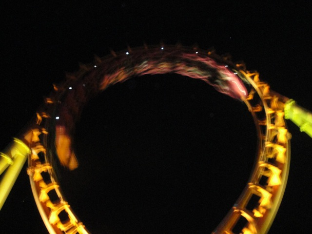
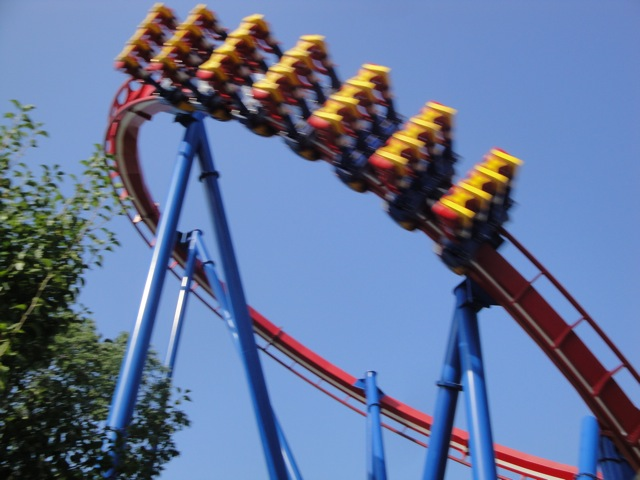
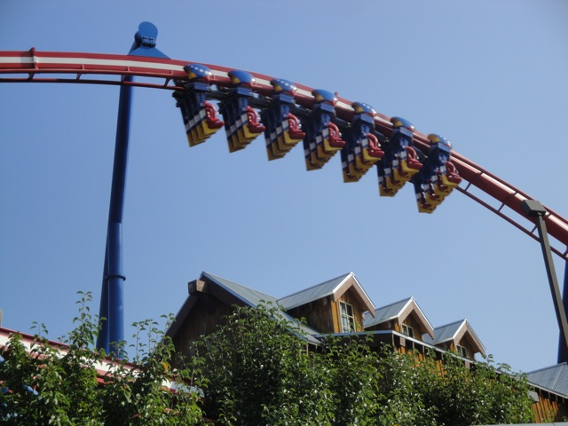

TPR's Middle America Tour
Nickelodeon Universe
Adventureland
Worlds of Fun
Silver Dollar City City Museum Six Flags St. Louis Holiday World Indiana Beach Six Flags Great America Mt. Olympus Timber Falls Valleyfair
Next park on the list is Worlds of Fun. And sorry gun lunatics, but Worlds of Fun is not a gun friendly park.
 First ride of the night was indeed Patriot.
First ride of the night was indeed Patriot.
 Hey, Worlds of Fun may not be gun friendly, but at least they're very patriotic.
Hey, Worlds of Fun may not be gun friendly, but at least they're very patriotic.
 Timber Wolf was actually a really good woodie. Not Prowler good of course, but I had a really fun time on it.
Timber Wolf was actually a really good woodie. Not Prowler good of course, but I had a really fun time on it.
Meh, I don't have time for this. I've got better things to ride.
 Like Mamba for example.
Like Mamba for example.
How come the Worlds of Fun Vending Machine only has Cedar Point coasters on it?
 Mamba was pretty much like Steel Force. Only without the bitch.
Mamba was pretty much like Steel Force. Only without the bitch.
Ooh. Look at the pretty lights.
 Yup. They've got one of these here. (Well, at least this one isn't too rough.)
Yup. They've got one of these here. (Well, at least this one isn't too rough.)

Cha Ching!!!
 All right! After this and our Prowler ERT, we will be done with our Worlds of Fun ERT!!! (Except for the Wacky Worm, but we at Incrediblecoasters want to keep our last shred of dignity.)
All right! After this and our Prowler ERT, we will be done with our Worlds of Fun ERT!!! (Except for the Wacky Worm, but we at Incrediblecoasters want to keep our last shred of dignity.)
Spinning Dragons Spininess.
 And now, the moment you've all been waiting for. Prowler ERT!!! =)
And now, the moment you've all been waiting for. Prowler ERT!!! =)
Prowler at night kicks so much ass. And Prowler ERT was simply amazing!!!
Not only did Worlds of Fun give us more Prowler rides than we can possibly count, but they even threw in bonus drinks afterwords!!! Thank you Worlds of Fun. You guys are awesome!!
 But the party doesn't end there. Now we're off to Waffle House for more craziness.
But the party doesn't end there. Now we're off to Waffle House for more craziness.
 Now that's a view I'd like to wake up to every day.
Now that's a view I'd like to wake up to every day.
Yep. We're back at Worlds of Fun for more fun and awesomeness.
 Now we have Patriot ERT!
Now we have Patriot ERT!
 Unfortunetly, technical difficulties had post poned the ERT.
Unfortunetly, technical difficulties had post poned the ERT.

Despite this, We still got first rides of the day. Thank you Worlds of Fun. You guys are awesome.

As for how Patriot was, it was pretty much like Talon, only more patriotic looking and in the midwest. So yeah, not an Incrediblecoasters Favorite.
Up next, more Spinning Dragons.
I never realized until now, but Spinning Dragons is basically a Fairly Odd Coaster clone.
Well, at least if you don't get wet on the lof flume, you'll still be cooled off by the shade.
Yup. I'm living my childhood days at SFMM on the Worlds of Fun Rotor.
You know, I think an enterprise might fit just perfectly in Spin Out's old spot. ;)
 After the craziness of last night's Prowler ERT, I had to see how good Prowler was in the day.
After the craziness of last night's Prowler ERT, I had to see how good Prowler was in the day.
 Prowler is much better in the dark since you're in the middle of the forest. But day or night, Prowler is still currently the best GCI ridden by Incrediblecoasters.
Prowler is much better in the dark since you're in the middle of the forest. But day or night, Prowler is still currently the best GCI ridden by Incrediblecoasters.
Random Worlds of Fun Flat Ride that I did not ride.
Meh, that lunch may be good, but just wait until dinner.
During the raffle they had during lunch, I ended up winning a Prowler Hat and Patch. Now I may not be a hat person or a patch person, but still. It's a miricale when anyone at Incrediblecoasters wins anything!!!
 Not only did we at Incrediblecoasters win a Prowler hat, but we also got a Prowler Backstage Tour!!! =)
Not only did we at Incrediblecoasters win a Prowler hat, but we also got a Prowler Backstage Tour!!! =)
 Incrediblecoasters is especially grateful for this backstage tour because you can't really get any Prowler shots without one. (That one shot is the exception, and thus, a common shot.)
Incrediblecoasters is especially grateful for this backstage tour because you can't really get any Prowler shots without one. (That one shot is the exception, and thus, a common shot.)
That hill right there actually provides some pretty sweet airtime.
 Prowler through the trees.
Prowler through the trees.
Prowler showing off it's own merchandise.
 Notice Prowler's awesome location. Now imagine it in the dark and you'll get a tiny glimpse of Prowler ERT.
Notice Prowler's awesome location. Now imagine it in the dark and you'll get a tiny glimpse of Prowler ERT.
 Yeah. It was really f*cking awesome.
Yeah. It was really f*cking awesome.
Sorry people on the train, but this is a private backstage tour. Please leave as quickly as possible.
 Incrediblecoasters loves Prowler.
Incrediblecoasters loves Prowler.
This was actually a really nice ride and actually had some decent theming. Now why can't Knotts retheme Wipeout to a Tornado?
 Good bye Worlds of Fun. We will meet again someday.
Good bye Worlds of Fun. We will meet again someday.
And now, for dinner, we're off to Lamberts Cafe!! (If you don't know what Lambert's Cafe is, look it up.)
While some people looked at the local shops during the wait, we at Incrediblecoasters decided to play a little football in this grassy field. (If I tried out for real football, I'd probably get $1,000 if I promise to never touch a football again.)
All right. Time to eat.
Why it appears that that guy is making a jackass of himself. Catching bread in his mouth like an uncivilized animal. Why, just saying that makes him look like a jackass.
Yeah, the food is f*cking huge here. I didn't even eat half of that.
Mental tip, when you see Incrediblecoasters, aim for the head.
Yup. Dinner was awesome. Although, I now never want to hear the word food again.
Silver Dollar City
Home